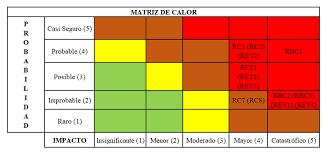
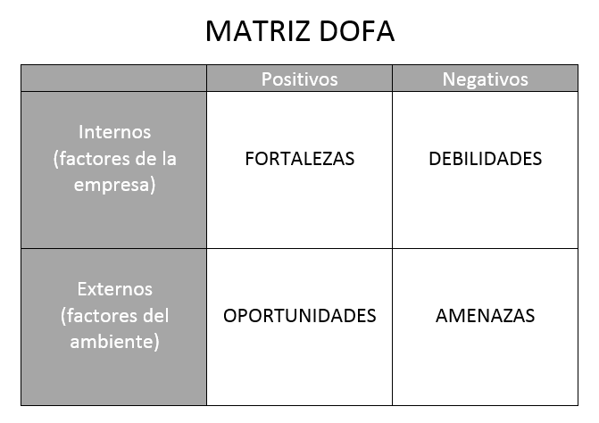

Fundamentos, marco normativo colombiano, identificación y evaluación de riesgos, controles y casos prácticos.
Revisión independiente y sistemática de los procesos, controles, políticas, infraestructura y aplicaciones tecnológicas de una organización para verificar si protegen adecuadamente la información y apoyan los objetivos del negocio.
La financiera verifica si los números son correctos; la de TI verifica si el sistema que produce esos números es confiable, seguro y trazable.
"La DIAN orienta su gestión explícitamente hacia confidencialidad, integridad, disponibilidad y privacidad."
Esta auditoría prioriza y enfoca sus esfuerzos en las áreas y procesos que presentan mayor riesgo para una organización.
Es una respuesta esencial a un entorno empresarial en constante evolución. Al adoptar la ABR, las organizaciones no solo se aseguran de abordar los riesgos más críticos.
Régimen general de protección de datos personales. Reconoce derechos de los titulares sobre sus datos.
Reglamenta autorización, políticas de tratamiento, ejercicio de derechos, transferencias internacionales y responsabilidad demostrada.
SGSI internacional: evaluación y tratamiento del riesgo, controles y mejora continua.
Marco de gobierno y gestión de TI. Alinea tecnología, valor, riesgo y desempeño.
Guías de gobierno digital y seguridad de la información para entidades públicas colombianas.


Software, infraestructura y configuraciones.
Procesos y personas.
Normas legales y regulatorias.
Decisiones de continuidad y valor del negocio.
Evitan que los incidentes ocurran. Diseñados para bloquear amenazas antes de que generen impacto.
Identifican incidentes cuando ocurren. Permiten detección temprana y respuesta ágil.
Ayudan a recuperarse y corregir la causa raíz después de un incidente.
Un control evalúa tres dimensiones: Suficiencia (¿cubre el riesgo?), Diseño (¿está bien construido?) y Aplicación práctica (¿opera con evidencia verificable?). Un control en papel puede fallar si no hay monitoreo ni responsables claros.
Clasificación de Severidad
Corregir accesos críticos · Activar backups · Aplicar parches urgentes · Documentar responsables.
Formalizar matriz de riesgos · Mejorar segregación de funciones · Pruebas de recuperación · Cerrar brechas normativas.
Madurar SGSI · Integrar auditoría continua · Automatizar controles · Alinear con COBIT 2019 e ISO/IEC 27001:2022.
TecnoSeguro ha migrado el 80 % de sus servicios a la nube, pero reportó dos incidentes de indisponibilidad en el último trimestre, afectando la atención al cliente y generando riesgos de cumplimiento normativo. El objetivo de esta auditoría es evaluar el SGSI y la continuidad operativa para mitigar interrupciones y pérdida de datos.
Se identifican los activos críticos y se establecen los riesgos clave que guiarán todo el trabajo de auditoría.
Base de datos de clientes — repositorio central con información personal y transaccional.
Sistema de atención al cliente — plataforma migrada a la nube con dos incidentes de indisponibilidad recientes.
Servidor en la nube — infraestructura que aloja el 80 % de los servicios operativos.
Fuga de información de clientes almacenada en la nube sin controles de cifrado adecuados.
Inoperatividad del sistema por más de 4 horas sin plan de continuidad actualizado.
Falta de actualización de parches de seguridad en los servicios migrados a la nube.
Los riesgos se priorizan para concentrar el esfuerzo auditor donde el impacto potencial es mayor.
Fallo en la autenticación de usuarios — riesgo de acceso no autorizado a la plataforma y a la base de datos de clientes en la nube.
Plan de Recuperación ante Desastres (DRP) no actualizado tras la migración a la nube — la empresa no puede garantizar la continuidad ante una caída del proveedor cloud.
Falta de capacitación en seguridad al personal nuevo que accede a los sistemas cloud sin entrenamiento formal en buenas prácticas.
Se aplican tres tipos de pruebas para recopilar evidencia suficiente y competente.
Revisión de los logs de acceso al sistema cloud: se verifican intentos fallidos, horarios inusuales y accesos desde IPs no autorizadas.
Entrevista al responsable de seguridad de la información para verificar si el DRP contempla los nuevos servicios migrados a la nube y si existe un calendario de ejercicios de simulacro.
Se simula una caída del servidor principal en la nube para verificar la eficacia del plan de continuidad: tiempo de activación del sitio alterno, comunicación al equipo de respuesta y recuperación del servicio.
Los hallazgos se clasifican por severidad y se acompañan de recomendaciones accionables.
El DRP no contemplaba los nuevos servicios en la nube. Al simular la caída del servidor, el equipo tardó más de 4 horas en activar el plan alterno porque los procedimientos hacían referencia a la infraestructura on-premise anterior.
Actualizar el DRP inmediatamente para incluir todos los servicios cloud. Realizar un simulacro formal con métricas de RTO/RPO dentro de los próximos 30 días.
Se encontraron usuarios activos de empleados que ya no laboran en la empresa con acceso vigente a los sistemas cloud. Esto representa una superficie de ataque activa y una violación del principio de mínimo privilegio.
Deshabilitar de inmediato todas las cuentas identificadas. Implementar una revisión mensual de usuarios y accesos vinculada al proceso de desvinculación de personal.
El informe incluye los dos hallazgos de riesgo alto, las acciones correctivas acordadas, los responsables asignados y las fechas límite de cumplimiento. Se presenta a la gerencia para decisión y asignación de recursos.
Se acuerda una revisión de seguimiento en 90 días para verificar que los riesgos altos han sido mitigados: DRP actualizado con simulacro ejecutado y cuentas de exempleados deshabilitadas con proceso formal implementado.
Recursos concentrados en las áreas de mayor riesgo: nube y gestión de accesos.
Valor estratégico para la gerencia: información clara para la toma de decisiones.
Control interno mejorado con recomendaciones prácticas e implementables.
El enfoque basado en riesgos permitió a TecnoSeguro reducir su exposición al riesgo de indisponibilidad y acceso no autorizado en un ciclo de auditoría de 3 semanas, con seguimiento formal a los 90 días para verificar el cierre de los hallazgos críticos.